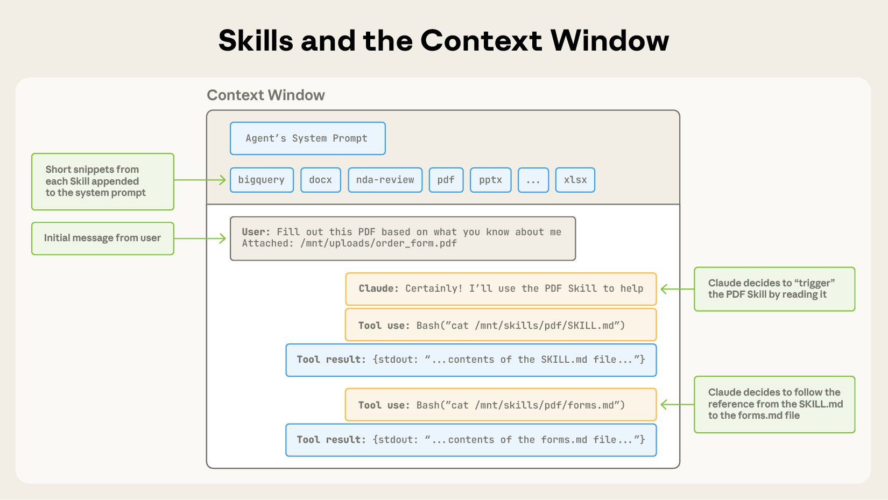

A스킬을 단계적으로 여는 원리
"Agent는 스킬마다 이름과 설명 한 줄만 먼저 봅니다. 요청이 그 설명과 맞는다고 판단할 때만 파일을 열어 본문을 읽습니다. 그래서 설명 한 줄이 이 스킬을 쓸지 말지를 정합니다."
슬라이드 p17은 "Agent는 필요한 Skill을 선택하고 해당 절차를 따른다"까지만 말합니다. 어떻게 고르는지가 빠져 있습니다. 답은 세 단계로 나눠 읽는 방식입니다. 이를 progressive disclosure(단계적 공개)라고 부릅니다.
- 1단계: 시작할 때 모든 스킬의 이름과 설명만 시스템 프롬프트에 들어갑니다. 책의 목차와 같습니다.
- 2단계: 요청과 맞는 스킬이 있으면 Agent가
read_file로 SKILL.md 본문을 읽습니다. 해당 장을 펼치는 것과 같습니다. - 3단계: 본문이 가리키는 추가 파일이 있으면 그때 엽니다. 이 실습의 스킬에는 추가 파일이 없습니다.
스킬이 수십 개여도 본문을 한꺼번에 넣지 않으니 모델이 읽을 양(토큰)이 줄어듭니다. 대신 설명이 모호하면 Agent가 스킬을 열지 않습니다. LAB 4.1은 일부러 그 사고를 내 보는 실습입니다.
4-1 LAB과 같은 설정으로 Agent를 만들고, 모델 자리에 받은 글을 기록만 하는 가짜 모델을 넣어 첫 호출의 시스템 프롬프트를 꺼냈습니다. 이 글은 모델이 아니라 deepagents가 만드므로 사내 모델에서도 같습니다. 디버그 셀을 켜면 강사 화면에서 이 부분을 보여 줄 수 있습니다.
코드 작성, 수학 계산 등 보고서·리서치 범위를 벗어난 요청은 정중히 거절한다.
## Skills System
…
**Available Skills:**
- **samsung-ds-report**: 삼성전자 DS부문 AI연구소 공식 보고서 작성 스킬. 사용자가 "보고서", "리포트", "DS 양식" 등을 언급하며 작성을 요청할 때 반드시 발동한다. …
-> Read `/skills/samsung-ds-report/SKILL.md` for full instructions
**How to Use Skills (Progressive Disclosure):**
Skills follow a **progressive disclosure** pattern - you see their name and description above, but only read full instructions when needed:출처: deepagents 0.7.18 SkillsMiddleware가 만든 첫 호출 시스템 프롬프트(2,157자, 가짜 모델로 기록, 2026-10-21). 가운데는 줄였습니다.
모델이 스킬을 열면 도구 결과([ToolMessage])가 아래처럼 시작합니다. LAB 3.3의 "@@ lines 줄을 보라"는 안내가 이 줄입니다.
[ToolMessage] @@ lines 1-72 of 72 @@
---
name: samsung-ds-report같은 가짜 모델로 read_file을 한 번 부르게 해 LAB의 출력 방식(앞 200자)대로 찍은 것. 줄 수는 파일 상태에 따라 다릅니다.


cat 대신 read_file 도구를 씁니다. 출처: 같은 글 본문 이미지."At startup, the agent pre-loads the name and description of every installed skill into its system prompt. This metadata is the first level of progressive disclosure: it provides just enough information for Claude to know when each skill should be used without loading all of it into context. The actual body of this file is the second level of detail. If Claude thinks the skill is relevant to the current task, it will load the skill by reading its full SKILL.md into context."
시작할 때 모든 스킬의 이름과 설명을 시스템 프롬프트에 미리 넣는다. 이것이 1단계다. 본문은 2단계로, 지금 일에 맞는다고 판단하면 SKILL.md 전체를 읽는다.
Anthropic, Equipping agents for the real world with Agent Skills
"Like a well-organized manual that starts with a table of contents, then specific chapters, and finally a detailed appendix, skills let Claude load information only as needed"
목차, 각 장, 부록 순서로 된 잘 정리된 설명서처럼, 필요한 만큼만 읽는다.
같은 글
"Loading all instructions into the system prompt wastes tokens on information irrelevant to the current task, and providing the same guidance manually across sessions does not scale. Skills use progressive disclosure: the agent loads skill information in layers instead of all at once."
지시를 전부 시스템 프롬프트에 넣으면 지금 일과 상관없는 정보에 토큰을 쓴다. 그래서 스킬은 여러 층으로 나눠 읽는다.
LangChain, Deep Agents · Skills (실습이 쓰는 라이브러리의 공식 문서)
LAB 4장 SKILL.md 맨 위의 # ✍️ CHANGE_HERE: … 줄은 1단계 목록에는 나오지 않습니다(YAML 주석이라 버려짐). 하지만 2단계에서 read_file로 파일을 열면 이 주석 줄도 그대로 모델에게 갑니다(위 가짜 모델 실험에서 확인). LAB 4장 글의 "Agent가 읽는 내용에 영향이 없습니다"는 1단계에만 맞는 말입니다. 수업에는 지장이 없습니다.